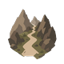

Gebaut 14.09.2026, Variante C (Owner: „go, C und Absage im Panel"). Die Route beachtet die
Zeitfenster der Wege gegen den Tag, an dem der Reisende dort ankommt, und sagt es, wenn sie deshalb anders
läuft: oben dass und wie viel länger, am Abzweig welcher Weg und warum.
Echt: Yrramis → Greifenfurt zu Fuß, Reisebeginn 3. Firun, Live-Probe 14.09.2026 (API-Revision 16) —
330,7 Meilen und 15,84 Tage über Nôrrhöh und Kaltenbach; ohne Sperre 284,8 Meilen und 14,45 Tage über den Saljethweg.
Geschätzt: die Stunden je Etappe; Distanz, Tage, Abzweig und Wortlaut stammen aus der Antwort.
Oben steht dass und wie viel länger — damit die Zahlen darunter lesbar sind. Am Abzweig steht welcher Weg und warum; der Name zoomt auf den Weg. Keine Aussage steht zweimal.

Gebirgspass (56,6 Meilen) von bis in 25,5 Stunden (1,06 Tage) 3.–5. Firun · Tiefschnee +33 %Gesperrt: — am 3. Firun, befahrbar vom 15. Peraine bis zum 30. Efferd.Gibt es nur über eine gesperrte Strecke eine Route, steht der Grund im Panel — dort, wo sonst „Keine Route gefunden" steht, und statt des Popups. Alle übrigen Absagen bleiben, wie sie sind. Beispiel mit angenommenen Orten.
Keine offene Route von Yrramis nach Mühlingen
Owner 14.09.2026: ohne Reisebeginn wird nichts gesperrt, aber führt die Route über einen Weg mit Sperrzeit, bittet der Plan, den Reisebeginn zu prüfen. Derselbe Kasten, derselbe zoombare Name; keine Etappe bekommt einen Vermerk, weil nichts umgangen ist. Ein Wechsel des Reisebeginns sucht die stehende Route neu.
Mit Kutsche fährt Yrramis → Greifenfurt weiter 2.942,8 Meilen über die See. Der Entwurf nannte das einen Umweg „wegen der Sperre am Schattenbachpass" — die Live-Probe sagt: nur halb. Der Pass besteht auch aus Pfad-Abschnitten, und ein Pfad trägt die Kutsche von Hause aus nicht (Wegart-Vorgabe, keine Sperre). Auch ohne die Sperre käme sie nicht durch; der Vergleichslauf findet keinen billigeren Weg, also steht kein Hinweis da.
Alles in einer Zeile unter dem Reisetitel; wo der Umweg beginnt, sucht man selbst.
Die Übersicht bliebe wie heute; wer nur die Zahlen oben liest, erführe nichts.
| Fall | am Anfang | am Abzweig |
|---|---|---|
| Zeitfenster | Wegen einer Sperrung anders geführt · 1,4 Tage länger | Gesperrt: Saljethweg — am 3. Firun, befahrbar vom 15. Peraine bis zum 30. Efferd. |
| Reisemittel (Land) | Wegen einer Sperrung anders geführt · 3,2 Tage länger | Gesperrt: Hahnentritt — mit Kutsche nicht befahrbar, nur zu Fuß und zu Pferd. |
| Weg ohne Namen | Wegen einer Sperrung anders geführt · 6,2 Tage länger | Gesperrt: Seeweg ab Enqui — am 12. Hesinde, befahrbar vom 1. Peraine bis zum 30. Boron. |
| zwei Sperrungen | Wegen zweier Sperrungen anders geführt · 7,6 Tage länger | ein Vermerk je Weg, an seinem eigenen Abzweig |
| „Kürzeste Route" | Wegen einer Sperrung anders geführt · 45,9 Meilen länger | wie oben |
| Absage | Keine offene Route von A nach B — Gesperrt: Saljethweg — am 3. Firun, befahrbar vom 15. Peraine bis zum 30. Efferd. | |
🪤 Artikelfrei, weil die Namen aus den Daten kommen: „Umweg um den Saljethweg" hinge am Geschlecht („um die Eisenstraße"). Kein Hinweis gibt es, wenn die Sperre die Route nicht verändert hat, ohne Reisebeginn für Zeitfenster, und für Reisemittel-Sperren auf Flüssen und Seen — dort ist die Sperre der Normalfall (600 Abschnitte). Wirken tun sie alle.